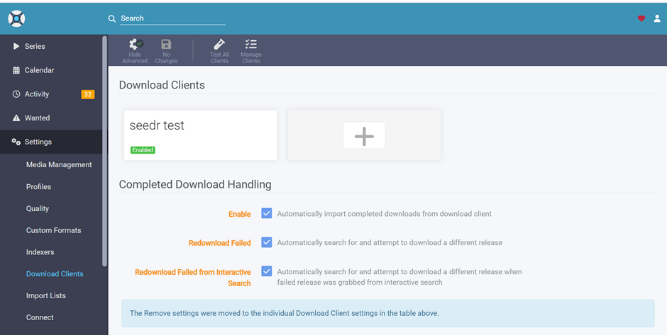
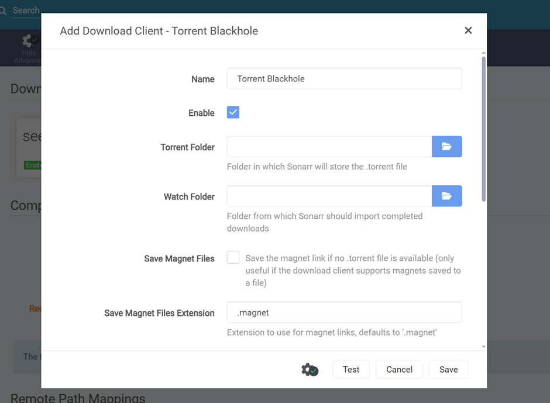

📦 Download & Get Started
Everything you need to start downloading TV shows automatically
Complete package with everything you need - just extract and run!
✨ Key Features
Automatic Watching
Monitors directories for new torrent files automatically
Cloud Storage
Downloads torrents directly to Seedr cloud storage
Sonarr Integration
Seamlessly imports downloaded shows to Sonarr
Web Interface
Easy-to-use dashboard at localhost:8242
Secure OAuth2
Safe Seedr account connection with device authentication
Portable
No installation required - just extract and run!
⚡ Quick Start (4 Easy Steps)
- Download & Extract: Download the ZIP file above and extract to any folder (e.g., C:\SonarrSeedr\)
- Run the Application: Double-click SonarrSeedr.exe - browser opens at http://localhost:8242
- Authenticate with Seedr: Click "Start Authentication", get device code, visit seedr.cc/device, enter code
- Configure Folders: Set Torrent Folder & Watch Folder in the plugin, then use the SAME EXACT PATHS in Sonarr's Download Client (Torrent Blackhole) settings
⚠️ CRITICAL: The plugin watches these folders and passes files to Sonarr. Both MUST point to the same folder locations or it won't work!
🖥️ System Requirements
- Operating System: Windows 10 (64-bit) or Windows 11
- RAM: 512MB minimum (1GB recommended)
- Storage: 100MB for application files
- Network: Stable internet connection
- Ports: 8242 (plugin), 8989 (Sonarr - optional)
⚙️ How to Configure Sonarr Download Client
🎯 CRITICAL: You MUST Use "Torrent Blackhole"
This plugin works ONLY with Sonarr's "Torrent Blackhole" download client. Do not use other download clients like qBittorrent, Transmission, etc. for this plugin.
📝 Step-by-Step Configuration:
- Open Sonarr web interface at
http://localhost:8989 - Click Settings (gear icon ⚙️) in the top menu
- Click "Download Clients" in the left sidebar
- Click the "+" button to add a new download client
- Select "Torrent Blackhole" from the list (see image below)
- Fill in the configuration:
- Name:
Sonarr-Seedr Plugin(or any name you prefer) - Enable: ✅ Check this box!
- Torrent Folder: Use the EXACT SAME
PATH you configured in the plugin (e.g.,
D:\Torrents\) - Watch Folder: Use the EXACT SAME
PATH you configured in the plugin (e.g.,
D:\Downloads\) - Save Magnet Files: ✅ Check this box
- Magnet File Extension:
.magnet
- Name:
- Click "Test" button - you should see a green checkmark ✅
- Click "Save" to save the configuration
- Verify the download client shows as "Enabled" in the list

↑ Select "Torrent Blackhole" from the download client list

↑ Configure with the same folders you set in the plugin
⚠️ Common Mistakes to Avoid:
- ❌ Using a different download client (qBittorrent, Deluge, etc.) - won't work!
- ❌ Using different folder paths in Sonarr than in the plugin
- ❌ Forgetting to enable the download client (checkbox must be checked!)
- ❌ Not checking the "Save Magnet Files" option
- ❌ Typing folder paths with typos or extra spaces
📚 Documentation
Complete Setup Guide
Detailed step-by-step instructions for Windows setup
Quick Setup Steps
Fast track guide to get running in minutes
README
Project overview and general information
📋 Before You Start
You will need:
- Seedr Account: Sign up free at www.seedr.cc
- Sonarr (Recommended): Download from sonarr.tv for TV show organization
- Two Folders: Create a Torrent Folder (e.g., D:\Torrents) and Watch Folder (e.g., D:\Downloads) - you'll configure these in BOTH the plugin AND Sonarr
- Windows Defender: May need to allow the application through your firewall
🔄 How It Works
- Drop a .torrent file into your Torrent Folder (configured in both plugin & Sonarr)
- Plugin watches folder and detects the file, then uploads to Seedr cloud
- Seedr downloads the torrent content to cloud storage
- Plugin downloads completed files to your Watch Folder
- Sonarr watches same folder and imports the TV show
- Enjoy watching! Your show is ready in your library
🔗 Why Same Folders?
The plugin and Sonarr work together by watching the same folders. Plugin watches Torrent Folder for new torrents to upload. Plugin downloads to Watch Folder. Sonarr watches Watch Folder to import. They MUST be configured with identical paths in both applications!
🔧 Quick Troubleshooting
| Problem | Solution |
|---|---|
| App won't start | Run as Administrator or use debug.bat |
| Port 8242 busy | Run: SonarrSeedr.exe --port 8001 |
| Authentication fails | Check internet, try new device code |
| Torrents not processing | Check folder permissions and watcher status |
🆘 Need Help?
Having issues? Check these resources:
💡 Tip: Run debug.bat (included in the ZIP) to see detailed error
messages